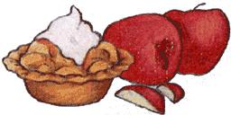
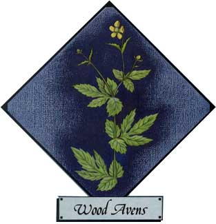
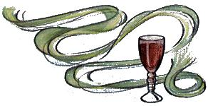
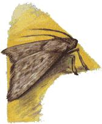
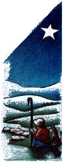

Two of its names are star of the earth and blessed herb. Herba benedicta, blessed herb, and herb bennet are names that have been given to several plants with healing virtues, but perhaps to none more deserving than Geum urbanum, or wood avens, a shy wayside herb of undistinguished appearance found in the British Isles, Europe, and Asia. Although it's found wild in North America only in areas where it has "escaped" from cultivation, wood avens is similar to several native plants (yellow avens, cream-colored avens, and rough avens, for example), some of which share its medicinal properties.
In the field of green remedies, wood avens holds its own. An infusion of the clove-scented rootstock is said to induce sleep, and a decoction of half an ounce of the root boiled in a pint of water, strained, cooled, and then drunk in wineglassful doses three or four times a day has been prescribed as an antidote to chills, ague, hemor rhages, and headaches. As a gargle, the decoction is traditionally used to combat halitosis and gum problems. As a tea, it's supposed to ease diarrhea, sore throat, and chronic bronchial catarrh. As a culinary herb, wood avens appears to have been used only to flavor ale and apple tarts; but the fragrant root, placed among household linens, acts as a sachet and moth repellant.
A perennial, wood avens grows one to two feet high. Its' erect, hairy stem, reddish at the bottom, supports five-part lower leaves and three-part upper ones. Bright yellow, star-shaped flowers about three-quarters of an inch in diameter grace the plant throughout the summer (in England, the herb blossoms into autumn and may even flow er in December). The root is finger-thick, anywhere from one to three inches long, with a yellow-to-brown outer coat and a pinkish or pink-violet interior. According to some authorities, the root should be harvested from dry ground in springtime: A few old-timers insisted that March 25 was the "proper" date. Since much of the spicy odor can be lost in the drying process, dehydration must be gradual. The beneficial properties of the root are said to keep best when it is dried whole, then sliced and powdered as needed.
Thriving in ordinary garden soil and preferring semishade, wood avens is easy to grow. You can gather its seeds from plants in the wild (but be sure to take the smallest amount possible, disturbing the area the least you can) and then sow them in boxes or in a frame. Transplant the young seedlings to a selected garden spot in July.
Insignificant though it may appear, wood avens is a much-loved herb. At least one authority believed that the term herb bennet was a derivation of St. Benedict's herb, a name given to many plants thought to have antidotal properties. In addition to enjoying a reputed power against the plague, wood avens was said to fend off evil spirits and venomous beasts. It was thought to protect the home and was at one time worn as an amulet against Satan.
Happier folklore, however, said that the trefoil leaves symbolized the Holy Trinity, while the five petals represented the five wounds of Christ. Star of the earth, some have called it, bringing to mind the joy and promise of the Christmas season.
|
 1 The root can be used to flavor apple tarts. |
 2 Wine cordial made from the root was believed to ward off plaque. |
 The dried root acts as a sachet and moth repellant |
|
 3 The dried root acts as a sachet and moth repellant. |
 |
|